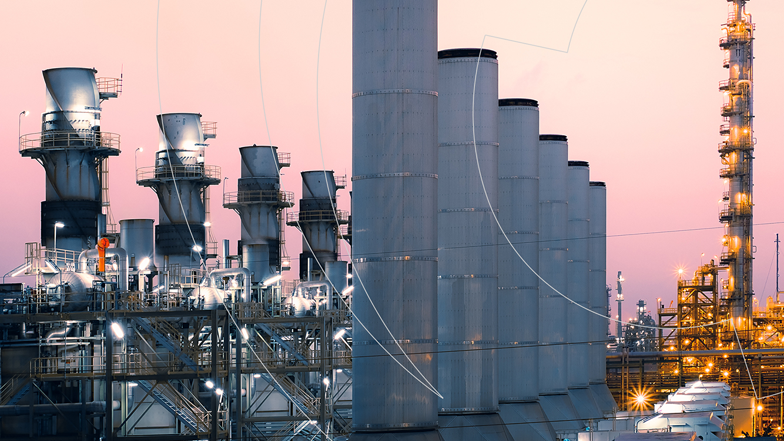

Principal
Eólica
Hidroéletrica
Solar
Termoéletrica
O que é a geração de energia Termoéletrica?
A geração de energia termoelétrica é um processo em que a energia térmica (calor) é convertida diretamente em energia elétrica. Isso é feito usando materiais que exibem o efeito termoelétrico, que é a capacidade de gerar uma corrente elétrica quando há uma diferença de temperatura aplicada a eles.
Vantagens
Ausência de Partes Móveis
Operação em Condições Extremas
Gerenciamento de Calor Residual
Escalabilidade
Silenciosos e Confiáveis
Baixo Impacto Ambiental
Desvantagens
Eficiência Baixa
Custo dos Materiais
Desempenho Limitado
Problemas de Escalabilidade
Desafios Tecnológicos
